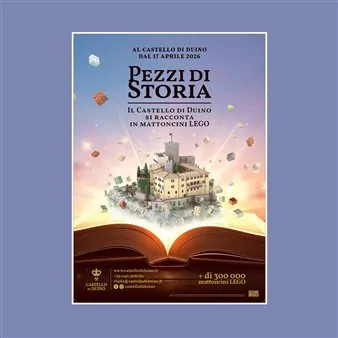

da ven 17 apr a sab 13 mar
Pezzi di Storia. Il Castello di Duino si racconta in mattoncini LEGO.
Negli anni al Castello di Duino sono passati musicisti come Franz Liszt e Johann Strauss, poeti e scrittori come Rainer Maria Rilke e Mark Twain, l’Imperatrice Elisabetta d’Austria (Sissi), l’Arciduca Francesco Ferdinando, l’Arciduca Massimiliano con la moglie Carlotta del…
 Indicazioni
Indicazioni
- Costi e prenotazioni
- Costo non indicato · Prenotazione non indicata
- Programma
- Programma da verificare. Apri la fonte ufficiale per orari e possibili aggiornamenti.
- In caso di maltempo
- Nessuna indicazione specifica pubblicata.
- Note
- Acquisito automaticamente dalla fonte.
L’EVENTO
Descrizione completa
Negli anni al Castello di Duino sono passati musicisti come Franz Liszt e Johann Strauss, poeti e scrittori come Rainer Maria Rilke e Mark Twain, l’Imperatrice Elisabetta d’Austria (Sissi), l’Arciduca Francesco Ferdinando, l’Arciduca Massimiliano con la moglie Carlotta del Belgio, l’attuale re Carlo d’Inghilterra, Gabriele D’Annunzio con Eleonora Duse, e tanti altri; tra cui, secondo la leggenda, anche Dante Alighieri, che proprio qui, durante l’esilio da Firenze, avrebbe scritto alcune terzine della Divina Commedia e a cui è intitolato lo scoglio che affiora tra il maniero e il Castello Vecchio.
Dal 17 aprile 2026 la lunga storia del Castello di Duino e della famiglia della Torre e Tasso, che da più di 400 anni ne è proprietaria, verrà plasmata da oltre trecentomila (300.000) mattoncini LEGO che daranno forma a sette installazioni - alcune di grandi dimensioni - che fanno parte del nuovo progetto “ Pezzi di Storia. Il Castello di Duino si racconta in mattoncini LEGO”: Il Castello di Duino La Scala Palladio Rainer Maria Rilke che legge le Elegie Duinesi la Principessa Marie von Thurn und Taxis (1855-1934) il Principe Raimondo della Torre e Tasso (1907-1986) la Bora soffia sul Molo Audace (Trieste) il Patto di Duino (1954) .
Le installazioni arricchiranno in forma stabile il percorso espositivo delle sale del Castello aperte al pubblico. Il risultato è un inedito dialogo a più voci tra arredi d’epoca, leggende, ricordi di famiglia, personaggi e vicende che nei secoli hanno attraversato queste mura. Più che un semplice gioco, il mattoncino da costruzione più famoso al mondo diventa così un vero e proprio strumento di comunicazione e un elemento di espressione artistica contemporanea in grado di raggiungere pubblici diversi, amplificando così il racconto, così sfaccettato e ricco, del maniero, che sarà accessibile in italiano, sloveno, tedesco e inglese.
00 anni di proprietà della famiglia della Torre e Tasso.
Luogo: Castello di Duino, fraz. Duino 32 (TS) - Friuli Venezia Giulia (Italia)
Castello di Duino : +39 040 208120
Date : da venerdì 17 aprile 2026
Per prenotazioni : visite@castellodiduino.it
Orari:
Dal 14 al 31 marzo 2026: 9.30-16.00
Da aprile a settembre 2026: 9.30-17.30
Dall’1 al 15 ottobre: 9.30-17.00
Dal 16 ottobre al 2 novembre 2026: 9.30-16.00
NB Dal 3 novembre 2026 al 13 marzo 2027 è in vigore l’orario invernale: il Castello è aperto solo sabato, domenica e giorni festivi dalle 9.30 alle 16.00
Biglietto:
Adulti: €12,50
Ragazzi 7-17 anni: €7,00
Bambini 0-6 anni: gratis
Famiglie (2 adulti + 2 o più ragazzi): €1,00 dal secondo ragazzo
Oltre i 65 anni: €10,00
Studenti (dai 18 anni, con carta): €9,00
Card (FAI - Fondo Ambiente Italiano, Touring Club, Viviparchi + Grotta Gigante, docenti, giornalisti): €10,00
FVG Card: ingresso gratuito
Castello Vecchio
Solo Castello Vecchio: €5,00
Biglietto combinato per chi paga tariffa intera: €15,00
Biglietto combinato per categorie con sconti: prezzo del biglietto scontato + €2,50
Gruppi
Gruppi da 10 a 24 persone: €10,00 cad.; visite guidate: €100,00/gruppo
Gruppi da 25 persone in su: €9,00 cad.; visite guidate: €4,00 cad.
Scuole
Fino ai 6 anni: entrata gratuita
Dai 7 ai 17 anni: €6 cad. (ogni dieci alunni un docente accompagnatore entra gratuitamente)
Dai 18 anni: €9 cad.
Visita guidata (a richiesta): €100 complessivi per gruppi fino a 24 alunni; €4 cad. per gruppi dai 25 alunni in su.
IL PROGRAMMA
Programma e orari
Appuntamenti raccolti dalle fonti elencate. Dove manca un orario, non è ancora disponibile in questa scheda.
Programma pubblicato
- Dal 2026-04-17 al 2027-03-13
INFORMAZIONI UTILI
Prima di partire
- Controllare la fonte prima di partire.
ORGANIZZAZIONE